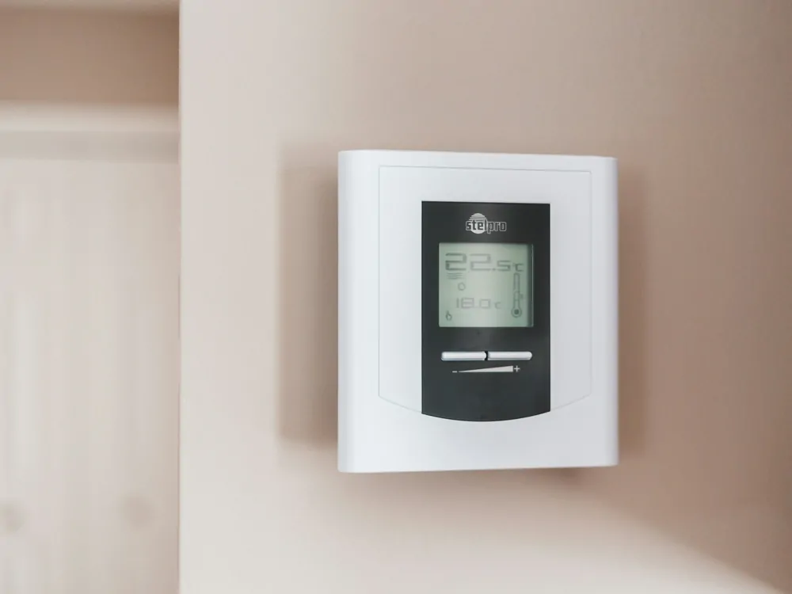

Set your thermostat back
Turning the heat down while you are out or asleep typically uses less energy than holding one temperature all day.
Comes off at move-out
Free
Under 30 minutes
High impact

What you need
- Nothing. Just your existing thermostat.
Steps
- Find your normal comfortable temperature and note it.
- Before bed or before leaving for the day, lower the setting a few degrees.
- If your thermostat is programmable, schedule the setbackTurning your heat down for a stretch of time, such as overnight or while you are out, and letting it come back up later, instead of holding one temperature all day.Read the full entry so you do not have to remember it.
- Set it back up when you return or wake, rather than leaving it low all day.
Sources
- U.S. Department of Energy — Energy Basics: HVAC Programmable Thermostats
- U.S. Department of Energy — Energy Saver 101: Home Heating
Last reviewed 2026-08-19.